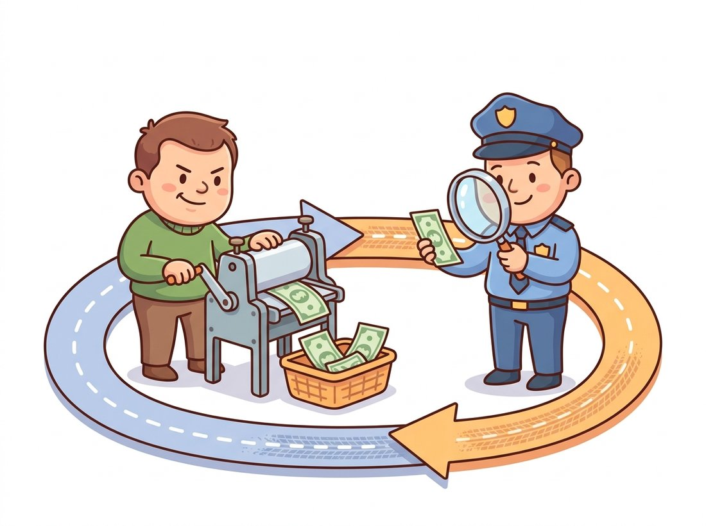
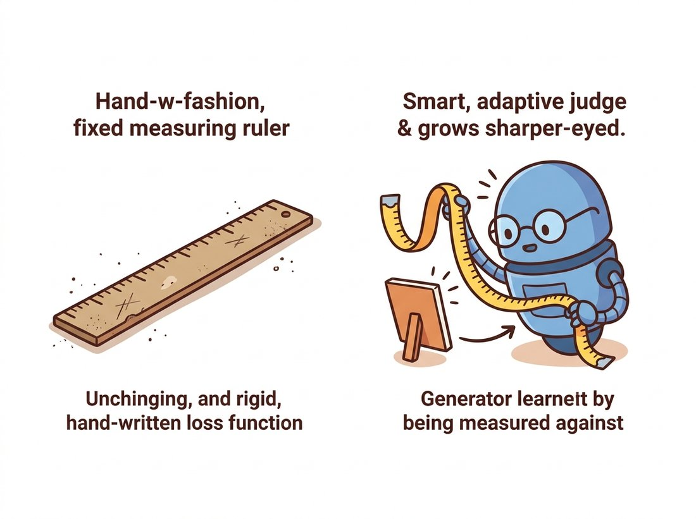

"My counterfeiter and I have an arrangement. I get better, then he gets better, then I get better. We have never agreed on anything except that the bank should never tell us apart. Last Tuesday it could not. We called it a draw and went home."
A Forger Who Reports Directly to the Mint
A GAN never receives a loss that describes a good image; it learns from a second network whose only job is to catch fakes, and training is the chase between a counterfeiter and the bank. This section derives that chase precisely. We write the two-player minimax value function, solve for the discriminator that any fixed generator should face, and discover that the generator is then secretly minimizing the Jensen-Shannon divergence between its samples and the data. We fix the one place where the textbook objective fails in practice, the generator's vanishing gradient early in training, with the non-saturating loss everyone actually uses, and we close by training a complete GAN on MNIST in about forty lines of PyTorch.
In the previous chapter the variational autoencoder learned to generate by maximizing a likelihood: it wrote down an explicit, if approximate, probability for every image and pushed that probability up. The cost of that honesty was softness. Averaging over many plausible reconstructions, the maximum-likelihood objective hedges its bets, and the hedge shows up as blur. The generative adversarial network of Goodfellow and colleagues (2014) makes the opposite bet. It refuses to write down a likelihood at all. It only learns to sample, and it judges those samples not against a formula but against an adversary. This is the defining move of an implicit generative model, a theme introduced in Chapter 30: a model you can draw from but cannot ask "how probable is this image".
Because the VAE of the previous chapter optimized a likelihood (an ELBO), it is tempting to assume the GAN does too, just with a fancier objective. It does not. A GAN never writes down, evaluates, or maximizes $p_g(\mathbf{x})$ for any image; the value function below contains no density of a real image, only the discriminator's verdict on samples. In fact a trained GAN cannot answer "what is the probability of this photo" at all, which is exactly why it appears as "None (implicit model)" in the likelihood row of the scorecard in Section 32.6. The generator learns only to produce samples whose distribution matches the data, never to score them. A quick self-test: if you think you could compute a GAN's perplexity or held-out log-likelihood on a test image the way you can for a VAE, re-read this box.
1. Two Networks, One Game Beginner
A GAN has two networks with opposing incentives. The generator $G$ takes a random vector $\mathbf{z}$ drawn from a simple prior $p_z$ (a standard Gaussian or uniform, exactly the kind of latent code you met in Chapter 31) and maps it to an image $G(\mathbf{z})$. Its goal is to make $G(\mathbf{z})$ look like a real sample. The discriminator $D$ takes an image, real or generated, and outputs a single number $D(\mathbf{x}) \in (0, 1)$, its estimated probability that the image is real. Its goal is to be right. The generator wants $D$ to be wrong on its fakes.
The standard analogy, from the original paper, is a team of counterfeiters ($G$) racing a police force ($D$). The counterfeiters print bills; the police inspect them and flag the fakes. Each side improves in response to the other. The counterfeiters never see a rulebook for "what a real bill looks like"; they only ever see whether the police caught them (the illustration below shows the endless friendly chase). Figure 32.1.1 lays out the wiring, and the three-word handle in the box below is worth carrying through the whole chapter.

The entire chapter hangs on one image. The counterfeiter ($G$) prints fakes, the cop ($D$) tries to catch them, and the chase between them, neither ever told what a real bill looks like, is the training. Every later idea is a tweak to one of the three: a smarter cop (the Wasserstein critic of Section 32.2), a counterfeiter with per-layer dials (StyleGAN, Section 32.3), or a counterfeiter who works to order (the conditional GAN, Section 32.4). When a GAN result confuses you, ask which of the three is winning.
Crucially, $G$ and $D$ are both differentiable networks, and $G$ is trained through $D$. The generator never touches a real image. Its only learning signal is the gradient that flows back from the discriminator's verdict on its fakes. That is the whole trick: the discriminator is a learned, adaptive loss function for the generator, and it gets harder to fool exactly as the generator gets better at fooling it.
2. The Minimax Value Function Intermediate
The two opposing goals are captured in a single value function $V(D, G)$ that the discriminator maximizes and the generator minimizes:
$$ \min_{G} \max_{D} \; V(D, G) \;=\; \mathbb{E}_{\mathbf{x} \sim p_{\text{data}}} \big[ \log D(\mathbf{x}) \big] \;+\; \mathbb{E}_{\mathbf{z} \sim p_z} \big[ \log\big(1 - D(G(\mathbf{z}))\big) \big]. $$
Read it term by term. The first term rewards the discriminator for assigning high probability $D(\mathbf{x}) \to 1$ to real images. The second rewards it for assigning low probability $D(G(\mathbf{z})) \to 0$ to fakes, since $\log(1 - D)$ is largest when $D$ is small. The discriminator wants both terms large. The generator appears only in the second term, and it wants that term small: it wants $D(G(\mathbf{z})) \to 1$, fooling the discriminator into calling its fakes real. This is the same binary cross-entropy loss you would use for any real-versus-fake classifier, with the labels real $= 1$ and fake $= 0$; the only novelty is that one of the two classes is produced by a network you are simultaneously training to defeat the classifier.
In every model before this chapter, the loss was a fixed formula chosen by a human: squared error, cross-entropy, an ELBO. A GAN replaces that fixed formula with a second network. The discriminator is the loss the generator minimizes, and because it is learned, it can capture aspects of "realism" that no hand-written loss does, sharp edges, plausible texture, global coherence. The catch, which the next section is entirely about, is that a moving loss is much harder to optimize against than a fixed one. The contrast is sketched in the illustration below.

3. The Optimal Discriminator and the Hidden Divergence Advanced
What is the generator actually minimizing? To answer that, fix the generator and ask which discriminator maximizes $V$. Let $p_g$ denote the distribution of generated images $G(\mathbf{z})$. Writing the expectations as integrals over image space, the value function is
$$ V(D, G) \;=\; \int_{\mathbf{x}} \Big[ p_{\text{data}}(\mathbf{x}) \log D(\mathbf{x}) \;+\; p_g(\mathbf{x}) \log\big(1 - D(\mathbf{x})\big) \Big] \, d\mathbf{x}. $$
The integrand has the form $a \log y + b \log(1 - y)$ in the scalar $y = D(\mathbf{x})$, which is maximized at $y = a / (a + b)$ (take the derivative $a/y - b/(1-y)$, set it to zero, and solve). The discriminator is free to pick its output independently at each image $\mathbf{x}$, so maximizing the whole integral just means maximizing this integrand pointwise. So for any fixed generator the best possible discriminator is
$$ D^{*}(\mathbf{x}) \;=\; \frac{p_{\text{data}}(\mathbf{x})}{p_{\text{data}}(\mathbf{x}) + p_g(\mathbf{x})}. $$
This is intuitive: where real images are far more common than fakes, $D^{*} \to 1$; where the generator over-produces, $D^{*} \to 0$; and where the two distributions are equal, $D^{*} = \tfrac{1}{2}$, the discriminator's coin-flip state of perfect confusion. Substituting $D^{*}$ back into $V$ and simplifying (the algebra is in the original paper) yields, up to a constant,
$$ V(D^{*}, G) \;=\; -\log 4 \;+\; 2 \cdot \mathrm{JSD}\big(p_{\text{data}} \,\|\, p_g\big), $$
where $\mathrm{JSD}$ is the Jensen-Shannon divergence, a symmetric, bounded relative of the KL divergence you met in Chapter 30. The generator minimizes $V$, so against an optimal discriminator the generator is minimizing the Jensen-Shannon divergence between its samples and the data. The global minimum is reached exactly when $p_g = p_{\text{data}}$, at which point $\mathrm{JSD} = 0$, $D^{*} = \tfrac{1}{2}$ everywhere, and $V = -\log 4 \approx -1.386$.
The optimal discriminator $D^{*}(\mathbf{x}) = p_{\text{data}} / (p_{\text{data}} + p_g)$ is a one-to-one function of the density ratio $p_{\text{data}}(\mathbf{x}) / p_g(\mathbf{x})$. The discriminator never estimates either density on its own, but it learns their ratio, and that ratio is exactly the signal a generator needs to know which way to move its samples. This density-ratio view is the bridge to the Wasserstein reformulation in Section 32.2, where a different distance replaces the JSD that this analysis exposes.
4. Why the Textbook Generator Loss Fails, and the Fix
The clean theory above hides a practical disaster. Early in training the generator is terrible, so the discriminator easily rejects every fake: $D(G(\mathbf{z})) \approx 0$. The generator's loss term is $\log(1 - D(G(\mathbf{z})))$, and the gradient of $\log(1 - D)$ with respect to the generator is tiny when $D \approx 0$. The function is flat there. So precisely when the generator most needs a strong learning signal, when it is producing garbage, it receives almost none. The loss saturates.
Goodfellow's fix, used in essentially every GAN since, is to change the generator's objective without changing its intent. Instead of minimizing $\log(1 - D(G(\mathbf{z})))$, the generator maximizes $\log D(G(\mathbf{z}))$, equivalently minimizing $-\log D(G(\mathbf{z}))$. Both objectives push $D(G(\mathbf{z}))$ toward 1, but the second has a large gradient exactly where the first is flat. This is the non-saturating loss, and the difference between the two curves, plotted in Figure 32.1.2, is the difference between a GAN that trains and one that stalls.
The legend that the GAN idea was sketched in a Montreal pub in 2014 is essentially true: Goodfellow has recounted arguing the design over drinks, then going home and coding the first working version that same night. The first GAN samples were tiny, grainy MNIST digits and 32-pixel CIFAR-10 images (the original paper also showed Toronto Face Database faces) that impressed almost no one outside the lab. Less than a decade later the same core objective was generating megapixel faces no human could flag as synthetic.
5. A GAN From Scratch on MNIST
The fastest way to internalize the game is to write it. Here is a complete, runnable GAN for $28 \times 28$ MNIST digits using fully-connected networks, deliberately small so it trains on a laptop CPU in a few minutes and on a GPU in seconds. We start with the two networks.
# Two small MLP adversaries for 28x28 MNIST: a generator that maps a
# latent vector to a flattened image, and a discriminator that scores
# an image as real or fake. Kept tiny so the game trains on a laptop CPU.
import torch
import torch.nn as nn
LATENT_DIM = 64
IMG_DIM = 28 * 28
class Generator(nn.Module):
def __init__(self):
super().__init__()
self.net = nn.Sequential(
nn.Linear(LATENT_DIM, 256), nn.LeakyReLU(0.2),
nn.Linear(256, 512), nn.LeakyReLU(0.2),
nn.Linear(512, IMG_DIM),
nn.Tanh(), # outputs in [-1, 1] to match normalized images
)
def forward(self, z):
return self.net(z)
class Discriminator(nn.Module):
def __init__(self):
super().__init__()
self.net = nn.Sequential(
nn.Linear(IMG_DIM, 512), nn.LeakyReLU(0.2),
nn.Dropout(0.3), # dropout regularizes D so it does not win too fast
nn.Linear(512, 256), nn.LeakyReLU(0.2),
nn.Linear(256, 1), # a single logit; we apply BCEWithLogitsLoss
)
def forward(self, x):
return self.net(x)Tanh so its output range matches images normalized to $[-1, 1]$; the discriminator emits a single raw logit, and dropout deliberately weakens it so it does not outrun the generator early on.
The training loop alternates two updates per batch: first the discriminator on a mix of real and fake images, then the generator through the (frozen-gradient) discriminator. We use BCEWithLogitsLoss, which combines a sigmoid and binary cross-entropy in a numerically stable way, and we implement the non-saturating generator objective by training $G$ against the "real" label, which is precisely minimizing $-\log D(G(\mathbf{z}))$.
# The full adversarial training loop: each batch updates the discriminator
# on real-versus-fake, then updates the generator through the discriminator
# using the non-saturating objective (push fakes toward the "real" label).
from torchvision import datasets, transforms
from torch.utils.data import DataLoader
device = "cuda" if torch.cuda.is_available() else "cpu"
tf = transforms.Compose([transforms.ToTensor(),
transforms.Normalize((0.5,), (0.5,))]) # to [-1, 1]
loader = DataLoader(datasets.MNIST(".", train=True, download=True, transform=tf),
batch_size=128, shuffle=True, drop_last=True)
G, D = Generator().to(device), Discriminator().to(device)
opt_G = torch.optim.Adam(G.parameters(), lr=2e-4, betas=(0.5, 0.999))
opt_D = torch.optim.Adam(D.parameters(), lr=2e-4, betas=(0.5, 0.999))
bce = nn.BCEWithLogitsLoss()
for epoch in range(30):
for real, _ in loader:
real = real.view(real.size(0), -1).to(device)
bs = real.size(0)
ones, zeros = torch.ones(bs, 1, device=device), torch.zeros(bs, 1, device=device)
# --- train discriminator: real -> 1, fake -> 0 ---
z = torch.randn(bs, LATENT_DIM, device=device)
fake = G(z)
loss_D = bce(D(real), ones) + bce(D(fake.detach()), zeros) # detach: no G gradient here
opt_D.zero_grad(); loss_D.backward(); opt_D.step()
# --- train generator: push fakes toward the "real" label (non-saturating) ---
z = torch.randn(bs, LATENT_DIM, device=device)
loss_G = bce(D(G(z)), ones) # minimize -log D(G(z))
opt_G.zero_grad(); loss_G.backward(); opt_G.step()
print(f"epoch {epoch:2d} loss_D {loss_D.item():.3f} loss_G {loss_G.item():.3f}")fake.detach() in the discriminator update, which blocks gradients from reaching the generator during D's turn.
Run this and the printed losses will not march steadily downward the way a normal training curve does. A healthy GAN run hovers: loss_D drifts toward roughly $2\log 2 \approx 1.386$ (the value when $D$ is at its confused equilibrium $D = \tfrac{1}{2}$) while loss_G bounces around a similar scale. Expected output for the first few epochs looks like this:
epoch 0 loss_D 0.847 loss_G 1.923
epoch 1 loss_D 1.046 loss_G 1.402
epoch 2 loss_D 1.198 loss_G 1.121
# ... losses stay in a band; sample quality rises even as numbers plateau
The two betas=(0.5, 0.999) on Adam are not arbitrary. Adam, the adaptive optimizer whose two betas are the exponential-decay rates for its running mean and variance of the gradient, was introduced with the PyTorch training loop in Section 18.5; here the lowered first momentum term ($\beta_1 = 0.5$ instead of the usual $0.9$) is the DCGAN recommendation of Section 32.3, and it noticeably stabilizes the oscillation. This tiny MLP GAN will produce recognizable but rough digits; swapping the MLPs for the convolutional generator and discriminator of Section 32.3 is what makes the samples crisp.
The from-scratch loop above is the right way to learn the mechanics, but you rarely write it in practice. PyTorch's torchgan and the broader ecosystem (and, for production face and image GANs, NVIDIA's stylegan3 repository) package the generator, discriminator, loss, and training schedule behind a few lines. The single most reused shortcut is nn.BCEWithLogitsLoss itself: it replaces a manual sigmoid followed by hand-written cross-entropy (and the log-sum-exp stabilization you would otherwise have to get right) with one numerically safe call, cutting the loss code from roughly eight lines to one and removing the most common source of NaN in early GAN code.
A small architecture-visualization studio in 2018 had a recurring bottleneck. Clients arrived with rough pencil elevations of a planned facade and wanted photoreal renders to show buyers, but a full 3D render took a junior artist most of a day per concept. The lead engineer prototyped a from-scratch conditional GAN, structurally the loop you just read, trained on a few thousand sketch-and-photo pairs of building exteriors scraped from the firm's archive. The first model collapsed: every output was the same beige stucco box regardless of the input sketch, the textbook mode collapse of Section 32.2. The fix was not a bigger network but the non-saturating loss and a discriminator weakened with dropout, exactly the two choices in the code above, which kept the generator learning long enough to discover variety. The shipped tool turned a day of rendering into a thirty-second draft the artist then refined, and the studio closed three contracts that quarter it credited to faster concept turnaround. The lesson: a GAN's headline failure is usually an optimization-balance problem, not a capacity problem, and the smallest correct objective often beats the largest network.
The adversarial objective derived here, once thought to be superseded by diffusion, returned to the spotlight in 2024 and 2025 as the engine of fast sampling. Adversarial diffusion distillation (the ADD loss behind SDXL-Turbo, Sauer et al., 2023, later reused for Stable Diffusion 3.5 Large Turbo) and its successor latent adversarial diffusion distillation (LADD, behind SD3-Turbo, Sauer et al., 2024) add a discriminator on top of a pretrained diffusion model (Chapter 33) so that a one-to-four-step student can match a fifty-step teacher. The discriminator is doing exactly what it does in this section, estimating a density ratio between real and generated images, but now in the service of speed rather than from-scratch generation. The 2024 line of consistency-model and distribution-matching distillation work uses the same adversarial signal. The minimax game you just coded is, ten years on, the fastest known way to turn a slow generator into a real-time one.
Exercises
Starting from the optimal discriminator $D^{*}(\mathbf{x}) = p_{\text{data}} / (p_{\text{data}} + p_g)$, explain in words why $D^{*} = \tfrac{1}{2}$ everywhere is both the generator's goal and the discriminator's worst outcome. Then argue why a discriminator that is too good, driving $D \to 1$ on reals and $D \to 0$ on fakes, is bad for training even though it is "correct". Connect your answer to the saturating-loss problem of Section 4.
Take the MNIST GAN above and replace the non-saturating generator loss bce(D(G(z)), ones) with the original saturating objective: compute fake = G(z), then maximize log(1 - sigmoid(D(fake))) by minimizing its negation. Train both versions for ten epochs, logging the generator's gradient norm each epoch (use torch.nn.utils.clip_grad_norm_ with a huge threshold to read the norm without clipping). Plot the two gradient-norm curves and confirm that the saturating loss produces a much smaller early-training gradient.
During a run, log D(real) and D(G(z)) (after a sigmoid) averaged over each epoch. A healthy run keeps both near $0.5$; a discriminator that is winning pushes D(real) toward $1$ and D(G(z)) toward $0$. Run for thirty epochs, plot both curves, and identify any epoch where the discriminator started to dominate. Propose, without coding it yet, one change from Section 32.2 that would rebalance the game, and explain which quantity in your plot it would move.